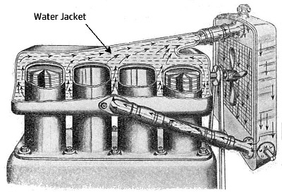
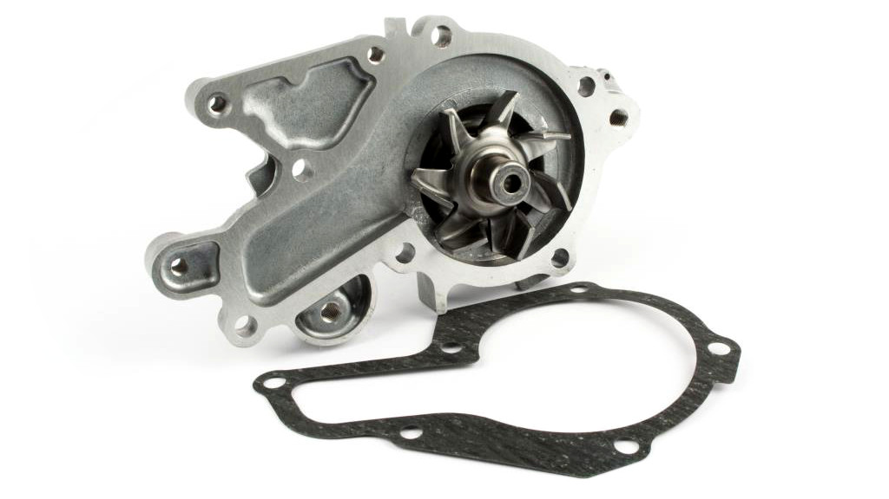
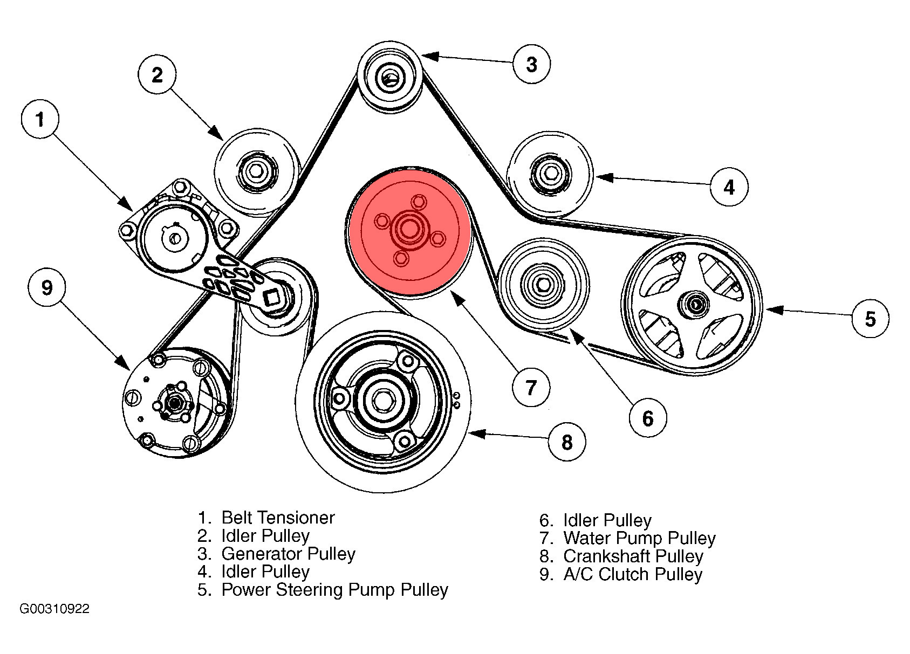

Water pump is an important part of your car’s water cooling system. It circulates water in the cooling system. Modern cars don’t use water as a cooling agent, but rather a mixture of antifreeze and high boiling point liquids called coolant. However the pump that circulates the coolant is still called a water pump. This article is a part of a series of articles in Automobile Engineering. Lets look into water pumps in detail.

Water jacket is a large cavity around the cylinder blocks through which the water is circulated. It covers all the hot points across the engine block, virtually covering the engine like a cooling jacket.
Earlier cars used to have water cooled engines without a water pump. Those cooling systems were completely relying on the physics of the boiling water. As the water molecule gets hot, it raises up by convection. This hot water was flown through the radiator and then the cooled down water was routed back to the bottom of the cylinder blocks, resulting continuous circulation of the water. This system was called a thermosyphoning cooling system. It was simple in design and a mechanical pump was not necessary for its operation. But, one major draw back of this system was that, the complete system had to be air tight. Otherwise, the vapour will leak out of the system resulting in no convective circulation. This also increased the pressure inside the water jacket and radiators and caused damage over time. It was also not possible to design the engine block in such a way that, the water jacket may have bends or twists, because it will affect the natural flow of water.

As we have seen in the previous article, modern cars have a much advanced water cooling system, which contains many components. A water pump is one of the major components. It circulates the water around the engine through the water jacket so that the system maintains the operating temperature. The water pump is often located at the lower most position of the water jacket, and rotating in the positive direction which encourages the natural convectional flow. A typical water pump in your car look like in the above image. It is often designed as centrifugal pump, so that even in a clogged system, the pressure generated by the pump will not be catastrophic.

Water pump is typically powered by the engine itself, through the fan belt. We will discuss about fan belts in details in an upcoming article. Typically water pumps doesn’t require any maintenance, as it is fully mechanical and doesn’t have much wear. Although, if there are other issues with your car’s cooling system, like a clogged radiator, or a blocked thermostat, water pumps may start leaking. A broken sealing around the shaft or a damaged bearing may also result in leakages. Some low quality water pumps may have plastic impellers, which may get worn out over time. In a typical car, a genuine part from the manufacturer should last at least 100000 kilometres.
Good quality engine coolant contains lubrication for water pump bearings. So, it is important that you use good quality coolant for your car, and replace it regularly as the manufacturer suggests in the maintenance manual.